9.1.9.1 ...的安装 装订器 D6/装订器 D6 (小册子制作器) 
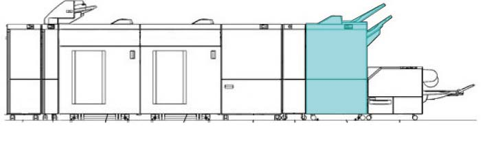
(图 1) ffw910013
产品代码
任何 one 以下:
装订器 D6 [装订器 D6 (没有 小册子)]
LM100083 (FB 设置 代码) [Apeos 7580G]
LD200243 (FB 设置 代码) [Revoria 按下 PC1120, Revoria 按下 EC1100, Revoria 按下 SC180G]
QD200140: 装订器 D6
EM100188: 电源线（3脚）
QD200140 [Apeos C8180G,ApeosPro C810G,Revoria 按下 PC1120, Revoria 按下 E1136G, Revoria 按下 EC1100, Revoria 按下 SC180G]
装订器 D6 (小册子制作器) [装订器 D6 (和/与 小册子)]
LM100084 (FB 设置 代码) [Apeos 7580G]
LD200244 (FB 设置 代码) [Revoria 按下 PC1120, Revoria 按下 EC1100, Revoria 按下 SC180G]
QD200141: 装订器 D6
EM100188: 电源线（3脚）
QD200141 [Apeos C8180G,ApeosPro C810G,Revoria 按下 PC1120, Revoria 按下 E1136G, Revoria 按下 EC1100, Revoria 按下 SC180G]
电源线（3脚）: EM100188 (FB), FBAP/WW (请参阅 6.2.7.1)
任何 one 以下:
接口 电缆 2 (EX 长): ED201502 (选件)
接口 电缆 2 (EX 长 4 m): ED201503 (选件)
接口 电缆 (Medium): EM200289 (选件)
接口 电缆 (2M): EM200398 (选件)
接口 电缆 2 (6M): ED201280 (选件)

用于 FBAP/WW, 电源线 is bundled.
安装时 此 装订器, the CDM or Interposer D1 需要. 用于 machines 不使用 模块 installed, 安装 模块 在执行...之前 此 步骤.
此 步骤 includes the 安装 procedures 用于 两个 装订器 D6 和 中央-装订 装订器 D6. Take 注意 of 目标的 装订器 每个 时间 it is mentioned in the 步骤.
安装时 折叠器 单元 CD2 同时, 安装 折叠器 单元 CD2 第一个 followed by 此 步骤.
安装步骤
关闭IOT主机和打印服务器, 拔掉电源.
用于 如何 to 关闭电源, 请参阅 the 维修 手册 用于 IOT 和 打印服务器.
打开 和 检查随附物品.
装订器 D6/装订器 D6 (小册子制作器) 随附物品 (图 2)
编号
名称
数量
1
顶部 纸盘
1
2
Earth 支架
2
3
电源线 (选件)
1
4
对接 板
1
5
小册子纸盘 (仅 用于 型号 和/与 小册子 单元)
1
6
AC Stopper 支架
1
7
螺钉
1
8
螺钉 (Silver, M3x7)
3
9
螺钉 (Silver, 用于 对接 板) (M4x6)
2
10
螺钉 (Silver, M4x8)
1
11
NVM 列表
1
* 那里 是 编号 illustrations 用于 Items 10 和 11.
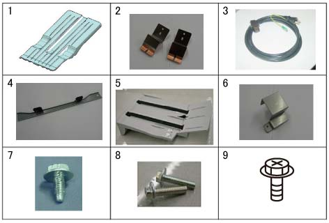
(图 2) ff910001
拆卸 tape 和 packaging material.
打开 装订器 前面 门 和 拆卸 装订针 Stopper by removing the securing 螺钉（x2） of 装订针 Waste Container. (图 3)
拉出 和 reinsert the Stapler 硒鼓 to 确保 it 已安装 securely.
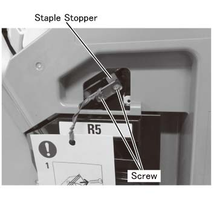
(图 3) ffw910005
安装 对接 板 to 右侧 的 上游 模块 using 螺钉 (Silver x2, 用于 对接 板) provided. (图 4)
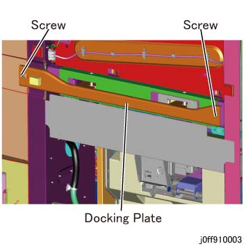
(图 4) ff910003
安装 Earth 支架. (图 5)
对齐 Earth 支架 (x2) 使用 LH 侧面.
用螺钉固定 (M3x7: x2).
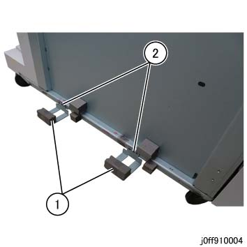
(图 5) ff910004
Temporarily 拆卸螺钉 的 Latch Stopper. (图 6)
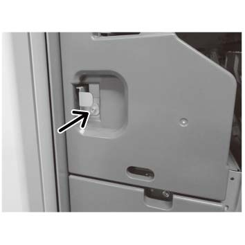
(图 6) ffw910006
拆卸 后面 连接器 盖板 of 装订器. (图 7)
拆卸螺钉.
打开 盖板.
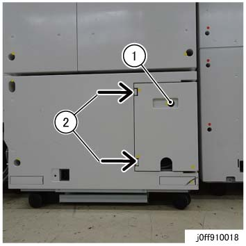
(图 7) ff910018
连接 I/F 电缆 (Middle/长/EX 长) to 装订器. (图 8)
The I/F 电缆 长度 used depends 在...上 配置 的 选件 模块
拉动 I/F 电缆 从后面 盖板 侧面 和 连接 it 到 lattice 连接器.
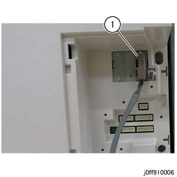
(图 8) ff910006
用于 machines 使用 HCS 和 TCBM connected, store the I/F Cables in the respective 电缆 Ducts 的 HCS 和 TCBM. (图 9)
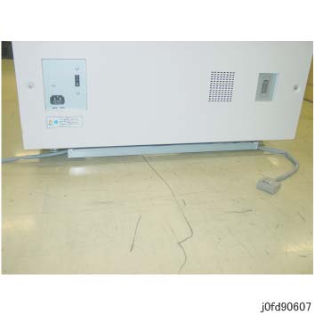
(图 9) fd90607
Gently dock the 上游 模块 和 装订器. (图 10)
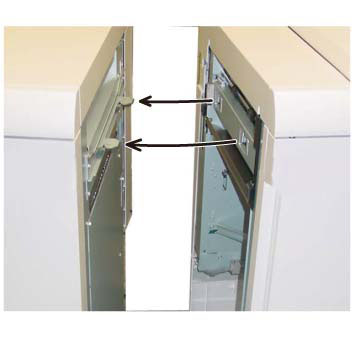
(图 10) ffw910004
检查 连接 之间 the 上游 模块 和 装订器 D6/装订器 D6 (小册子制作器).
Visually 确认 那里 是 编号 gaps 之间 the gaskets (at 前面 和 后面) 的 Earth 支架.
调整 高度 of 装订器 Casters accordingly if 那里 是 gaps 之间 the gaskets 和 the EME 板.
打开前盖板.
Take 出 the attached spanner. (图 11)
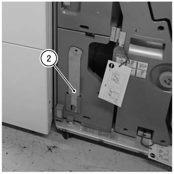
(图 11) ffw910001
拆卸 底部 盖板 (x2) 的 后面 下方 盖板. (图 12)
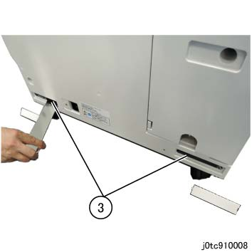
(图 12) tc910008
Use the wrench to 松开 the Securing 螺母 的 前面 和 后面 Caster. (图 14, 图 15)
Use the wrench to 转动 [前面 (x2)]: Adjusting 螺栓 (图 14), [后面 (x2)]: Adjusting Hexagonal 螺栓 (图 15) 和 调整 高度.
Factory 默认: 64mm
转动 hexagonal 螺栓 using the provided wrench.

(图 13) ifm910011
如果 is difficult to work 使用 provided wrench, use the ratchet wrench.
如果 is difficult to work 在后面, 拆卸后下盖板.
Use the wrench to 拧紧 the Securing 螺母. (图 14, 图 15)

(图 14) ia90011

(图 15) ip910018
安装 底部 盖板 (x2) 的 后面 下方 盖板.
固定 the Latch Stopper by using 螺钉. (图 16)
(图 16) ffw910006
[装订器 D6 (小册子制作器)] 拆卸 小册子 Stopper 和 keep it.
当...时 装订器 D6 (小册子制作器) 不是 installed, go to 步骤 16.
拆卸 上方 左侧 小册子 Stopper. (图 17)
(A) 螺钉(2)
(B) 小册子 Stopper
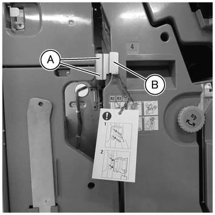
(图 17) ffw910002
滑动 the 底部 小册子 Stopper upward. (图 18)
(A) 松开 the securing 螺钉（x2）, 滑动 the Stopper upward, 和 固定 it 和/与 螺钉 再次.
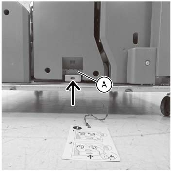
(图 18) fwf910007
拆卸 stopper of 堆叠器 纸盘. (图 19)
(A) 螺钉(2)
(b) 堆叠器 Stopper
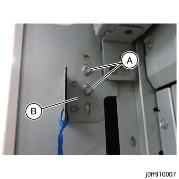
(图 19) ff910007
[装订器 D6 (小册子制作器)] 安装 小册子纸盘.
Grapple the hook 和 安装 小册子纸盘 on 装订器. (图 20)
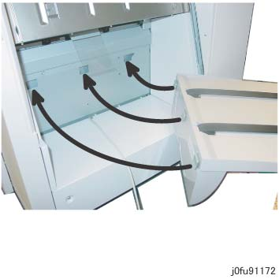
(图 20) fu91172
固定 the 小册子纸盘 和/与 螺钉 (Silver, M4x8). (图 21)
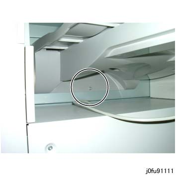
(图 21) fu91111
连接 connectors. (图 22)
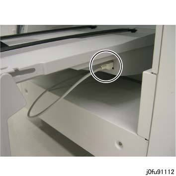
(图 22) fu91112
拆卸后盖板 的 CDM. (图 23)
拆卸螺钉（x4）.
拆卸后下盖板.
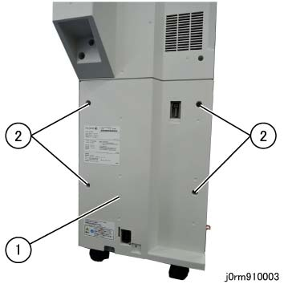
(图 23) rm910003
连接 I/F 电缆 (Middle/长/EX 长) 该 连接到 装订器 到 CDM 连接器 FIN (P307). (图 24)
The I/F 电缆 长度 used depends 在...上 配置 的 选件 模块
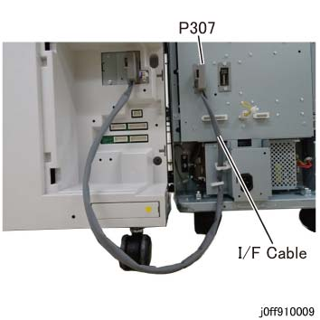
(图 24) ff910009
Reinstall the 后面 连接器 盖板 of 装订器.
连接电源线 to 装订器, 和 安装 支架 用于 protecting 电源线 using the Hand 螺钉. (图 25)
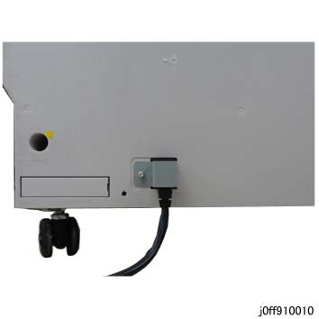
(图 25) ff910010
插入 电源插头 of 装订器 进入 the socket.
打开电源 开关.
插头 in 电源线 和 打开电源 开关.
打开电源 breaker 的 AC 单元, followed by 电源开关 of IOT.
[安装时 折叠器 单元 CD2] 写入 折叠器 折叠 调整 值 (factory 默认) to 装订器.
输入 the CE 模式.
设置 值 的 NVM 763-034 to 1, 和 然后 关机 和 On.

当...时 电源 已开启 当...时 折叠器 已连接, 折叠器 折叠 调整 值 将 automatically be 读取 从 折叠器 PWB 子 CPU 和 written to 装订器 主电路板 CPU.
[安装时 折叠器 单元 CD2]
By making a 复印 in 以下 折叠模式, 检查 折叠 位置 和 调整 it as 所需的.
A4: C 折叠, Z 折叠, 单面/单个 折叠
A3: Z 折叠 半/一半 纸张
输入 the NVM值 in DC131.
输入 the CE 模式.
确认 使用 customer 和 设置 默认 输出 destination 用于 复印.
型号
NVM
顶部 纸盘
堆叠器 纸盘
ApeosPro C810G, Apeos C8180G
790-183
4
2
If 任何 以下 conditions 是 met, 执行 Steps 26 to 33 to 检查 侧面 对齐/套准 用于 输出 纸张.
If 无 的 conditions 是 met, go to 步骤 34.
当...时 ...的组合 多于 5 出 Modules 是 connected
当...时 折叠器 单元 CD2 is combined
如果 长 纸张 安装 Kit 已安装
系统 对齐/套准 调整 必须 已执行 在...之前 以下 调整, 和 IOT 侧面 对齐/套准 必须 正确的.
输入 CE 模式 和 change 以下 NVM 设置.
The changed NVM 返回 到 默认值 当...时 the 子 电源 SW is turned 关闭/脱离/ON.
NVM 763-028 (Trigger 选择 of 纸张 可选的 位置 停止 特性)
默认值: Change 从 0 to 1
NVM 763-029 (Timeout 设置 从 Trigger of 纸张 可选的 位置 停止 特性)
纸张尺寸
默认值
新 值
A3SEF/ 11x17SEF
0
100
A4LEF/ 8.5x11LEF
0
300
打印 the 测试 pattern 和/与 以下 conditions.
项目
设置
Pattern 号码
234
数量
1
纸张 Supply
A4 LEF/A3 SEF or 8.5x11 LEF/11x17 SEF
2 面
1 面
出纸盘
装订器 顶部 纸盘 (出纸盘)
测量 gap 之间 the 侧面 边缘 of 纸张 该 stopped automatically 和 标准的 mark 位置 at 装订器 顶部 纸盘. (图 26)
As the 047-312 fault occurs 当...时 纸张 停止 automatically, 转动 子 电源 SW ON/关闭/脱离 和 repeat 从 步骤 16.
号码 纸张的 measured: 总计 3 纸张 (执行 Steps 27 和 28 three times)
标准: +/- 7mm
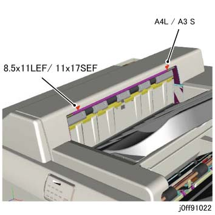
(图 26) ff910022
执行 步骤 30 如果 测量值 exceeds 标准的.
如果 值 is 在...之内 标准的, go to 步骤 33.
Determine 模块 用于 对接 调整.
配置
调整 模块
没有 折叠器
装订器
和/与 折叠器
折叠器
调整 对接 调整 板. (图 27)
松开螺钉 在后面.
拆卸螺钉 在前面, 和 reposition it 到 长 hole.
调整 对接 调整 板.
纸张 不 与...对齐 标准 Mark
移动 方向 of 调整 板
前面 方向
前面 方向 (a)
后面 方向
后面 方向 (b)
拧紧螺钉.
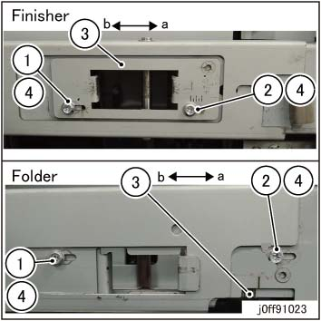
(图 27) ff910023
Dock 再次.
转动 子 电源 SW 关闭/脱离 和 ON. (The changed 值 in 步骤 26 返回 到 默认值.)
Keep the NVM 列表 in the 存储 space of 纸盘 2 of IOT.
检查 overall 操作 和 explain the operations 到 customer 在哪里 necessary.